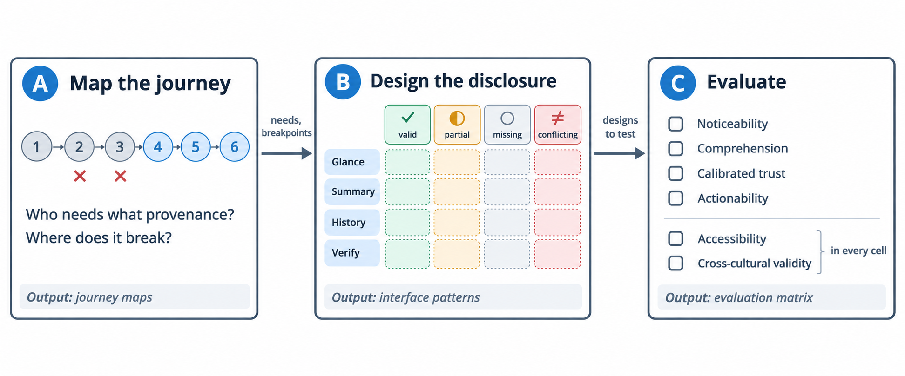

travel_diaries
AIMade with AI
♡ 2,481 · Sunset over the bay
Social feed
A small "Made with AI" tag at a glance. Do people notice it while scrolling? What does "made" mean?
Human-centered design of content provenance as interaction: what people should see, understand, and do with provenance evidence.

Content provenance infrastructure (signed C2PA Content Credentials, JPEG Trust, capture attestation, IPTC metadata, watermarks such as SynthID) can record how media was made and changed. A valid record still does not tell us whether people notice the signal, understand it, trust its source, know what to do next, or can use it across cultures, abilities, platforms, and high-stakes contexts.
Technical venues such as WMARK, APAI, GenProCC, and ATTRIB have advanced the robustness of provenance. This workshop builds the bridge across the last mile: from provenance infrastructure to experiences that are understandable, actionable, and equitable.
Can be never signed
Unknown signer; detectors disagree
Stripped, re-encoded, watermark removed
Does the person notice the cue?
What do they think it claims?
Share, verify, report, or ignore?
Problems upstream reach the person at the end of the pipeline. They decide whether someone sees provenance that is ✓ valid ◐ partial ○ missing or ≠ conflicting.
Label design changes whether people believe content is AI-generated, but has limited effects on engagement. Harm-based labels change sharing; process labels barely do.
"AI-generated" reads as a claim about process; "manipulated" implies intent to deceive. Effects vary across platform cultures and messaging apps.
Incomplete provenance lowers trust in authentic media, and labeling only some fakes leaves people off guard for unlabeled ones.
Watermarks can be removed and metadata is routinely stripped. Missing provenance must not read as "this is fake".
The same evidence shows up in very different moments. These illustrative sketches mirror the scenario packs participants will work with.
A small "Made with AI" tag at a glance. Do people notice it while scrolling? What does "made" mean?
Metadata stripped on forward, on an older phone with costly data. Missing should not mean fake.
Full Content Credentials on demand. Does a valid signature lead to calibrated trust, or blind trust?
Expert tools with conflicting signals under time pressure. How should disagreement be shown?


We treat provenance as interaction: not metadata attached to a file, but a series of moments in which a person meets a cue, forms a belief about what it claims and who stands behind it, and decides what to do.
What is needed from provenance beyond a binary AI/non-AI disclosure, and at which interaction moments?
What should be surfaced, when, and in what form? When is progressive disclosure better than always-on labels or on-demand verification?
How do source identity, confidence, edits, missing credentials, and conflicting signals affect trust calibration and action?
How should interfaces adapt to role and expertise, abilities and access needs, and cultural, linguistic, and infrastructural context, including the Global South?
What human-centered metrics and study designs should complement robustness benchmarks?
Content Credentials, watermarking, fingerprinting, and media forensics can provide strong provenance evidence. But what should people actually see, understand, and do with it? We invite researchers and practitioners from HCI, usable security, forensics, journalism, standards, accessibility, policy, and Global South communities.
Use the ACM single-column format. Name a concrete provenance problem, the people affected, and at least one design or evaluation question.
At least two organizers review each submission. Accepted work is shared non-archivally on this website with author permission (OSF optional). At least one author of each accepted submission must attend, and all participants must register for the workshop and at least one day of CHI 2027.
Two 90-minute sessions with one break. About 60% of the time is hands-on, in mixed groups of five or six, each led by an organizer.
| Time | Activity | Output |
|---|---|---|
| 0:00–0:10 | Welcome and provocation: "provenance is not a label" | Shared vocabulary |
| 0:10–0:30 | Invited talk 1: infrastructure to interface Speaker TBA | Technical constraints for design |
| 0:30–0:55 | Lightning talks (5 × 4 min), others on shared slides | Problem landscape |
| 0:55–1:15 | Activity A: provenance journey mapping | Stakeholder journey maps |
| 1:15–1:30 | Break and gallery walk ☕ | Cross-group annotations |
| 1:30–1:50 | Invited talk 2: the journalist and creator view Speaker TBA | Real-world decision needs |
| 1:50–2:20 | Activity B: disclosure design | Interface patterns, failure modes |
| 2:20–2:45 | Activity C: human-centered evaluation matrix | Measures, tasks, populations |
| 2:45–3:00 | Prioritization (dot vote), commitments, closing | Research agenda, working groups |
Each activity feeds the next: needs and breakpoints become designs, and designs become things to test.
Each group gets a scenario pack: one media item and its provenance trail (e.g., a photo signed at capture, edited, then forwarded with metadata stripped). Groups follow it through the six stages and note who handles it, what is needed or added, and what is lost or exposed.
With a constrained persona (a screen-reader user, a fact-checker on deadline, a journalist protecting a source), groups design how each breakpoint shows all four states.
Groups turn designs into evaluation plans: measures, comparison conditions, populations, and what counts as calibrated rather than maximal trust.
The team covers HCI, usable security, media forensics, provenance standards, journalism, accessibility, and policy, across several world regions.
The workshop is part of ACM CHI 2027, 10–14 May 2027. A fitting place to build bridges between provenance infrastructure and the people who meet it.
Can't travel? Accepted authors can contribute before CHI with short videos or slides, and everyone is welcome at the open online synthesis session afterwards.
Photo: Pittsburgh skyline from West End Overlook, by Cbaile19, CC0, via Wikimedia Commons.